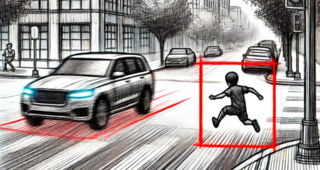

Srikanth Malla
 I am Srikanth Malla, currently leading initiatives as a Staff AI ML Engineer at Samsung Semiconductor US. My journey in tech began with roles at Honda Research Institute (HRI), USA, and Kinetic Automation, where I focused on research and development in Computer Vision and Machine Learning. My passion lies in the realm of intelligent robotics; I am driven by the vision of creating robots that coexist and assist humans, enhancing our everyday life. My academic foundation includes a Master's in Robotics Engineering from Worcester Polytechnic Institute (WPI), obtained in September 2018. Beyond my professional endeavors, I delve into projects that range from self-driving car technologies to deep learning applications, constantly seeking innovative ways to apply my skills in AI and machine learning to solve real-world problems.
I am Srikanth Malla, currently leading initiatives as a Staff AI ML Engineer at Samsung Semiconductor US. My journey in tech began with roles at Honda Research Institute (HRI), USA, and Kinetic Automation, where I focused on research and development in Computer Vision and Machine Learning. My passion lies in the realm of intelligent robotics; I am driven by the vision of creating robots that coexist and assist humans, enhancing our everyday life. My academic foundation includes a Master's in Robotics Engineering from Worcester Polytechnic Institute (WPI), obtained in September 2018. Beyond my professional endeavors, I delve into projects that range from self-driving car technologies to deep learning applications, constantly seeking innovative ways to apply my skills in AI and machine learning to solve real-world problems.
|
Contact: srikanth.m@samsung.com |
|---|
Publications
|
COPAL: Continual Pruning in Large Language Generative Models
Srikanth Malla, Joon Hee Choi, Chiho Choi ICML 2024 Paper Abstract Bibtex Video |
|
|  |
DRAMA: Joint Risk Localization and Captioning in Driving
Srikanth Malla, Chiho Choi, Isht Dwivedi, Joon Hee Choi, Jiachen Li WACV 2023 Paper Abstract Bibtex Dataset |

|
NEMO: Future Object Localization Using Noisy Ego Priors
Srikanth Malla, Isht Dwivedi, Behzad Dariush, Chiho Choi ITSC 2022 Paper Abstract Bibtex |

|
Bird's Eye View Segmentation Using Lifted2D Semantic Features
Isht Dwivedi, Srikanth Malla, Yi-Ting Chen, Behzad Dariush BMVC 2021 Paper Abstract Bibtex Video |

|
LOKI: Long Term and Key Intentions for Trajectory Prediction
Harshayu Girase*, Haiming Gang*, Srikanth Malla, Jiachen Li, Akira Kanehara, Karttikeya Mangalam, Chiho Choi ICCV 2021 Paper Abstract Bibtex Video |

|
RAIN: Reinforced Hybrid Attention Inference Network for Motion Forecasting
Jiachen Li, Fan Yang, Hengbo Ma, Srikanth Malla, Masayoshi Tomizuka, Chiho Choi ICCV 2021 Paper Abstract Bibtex Video |

|
Social-STAGE: Spatio-Temporal Multi-Modal Future Trajectory Forecast
Srikanth Malla, Chiho Choi, Behzad Dariush ICRA 2021 Paper Abstract Bibtex Slides |

|
Shared Cross-Modal Trajectory Prediction for Autonomous Driving
Chiho Choi, Joon Hee Choi, Jiachen Li, Srikanth Malla CVPR 2021 [Oral] Paper Abstract Bibtex Video |

|
TITAN: Future Forecast using Action Priors
Srikanth Malla, Behzad Dariush, Chiho Choi CVPR 2020 [Oral] Paper Abstract Bibtex Video |

|
DROGON: A Trajectory Prediction Model based on Intention-Conditioned Behavior Reasoning
Chiho Choi, Srikanth Malla, Abhishek Patil, Joon Hee Choi CORL 2020 Paper Abstract Bibtex Video |

|
SSP: Single Shot Future Trajectory Prediction
Isht Dwivedi, Srikanth Malla, Behzad Dariush, Chiho Choi IROS 2020 Paper Abstract Bibtex |

|
The H3D Dataset for Full-Surround 3D Multi-Object Detection and Tracking in Crowded Urban Scenes
Abhishek Patil, Srikanth Malla, Haiming Gang, Yi-Ting Chen ICRA 2019 Paper Abstract Bibtex Dataset |

|
Semi-supervised Learning: Fusion of Self-supervised, Supervised Learning, and Multimodal Cues for Tactical Driver Behavior Detection
Athma Narayanan, Yi-Ting Chen, Srikanth Malla CVPR 2018, Deep Vision Workshop Paper Abstract Bibtex |

|
Development of an Intelligent Pressure Measuring Technique using Radial Basis Neural Network
Naveen Kumar Vaegae, Venkata Lakshmi Narayana, Srikanth Malla Elsevier Sensors and Transducers Physical A Journal 2016 Paper Abstract Bibtex |
Professional Activities
program committee
- Association for the Advancement of Artificial Intelligence (AAAI) 2025
reviewer
- Transactions on Pattern Analysis and Machine Intelligence (TPAMI) 2024
- European Conference on Computer Vision (ECCV) 2024, 2022
- Computer Vision and Pattern Recognition (CVPR) 2024, 2023, 2022
- International Conference on Robotics and Automation (ICRA) 2024, 2022, 2021
- International Conference on Computer Vision (ICCV) 2023, 2021
- Winter Conference on Applications of Computer Vision (WACV) 2023
- Swiss National Science Foundation (SNSF), Grant Review 2022
- Robotics and Automation Letters (RAL) 2022
- International Conference on Intelligent Robots and Systems (IROS) 2020
- International Journal of Robotics ResearchReviewer (IJRR) 2020
- Transactions on Intelligent Vehicles (T IV) 2020